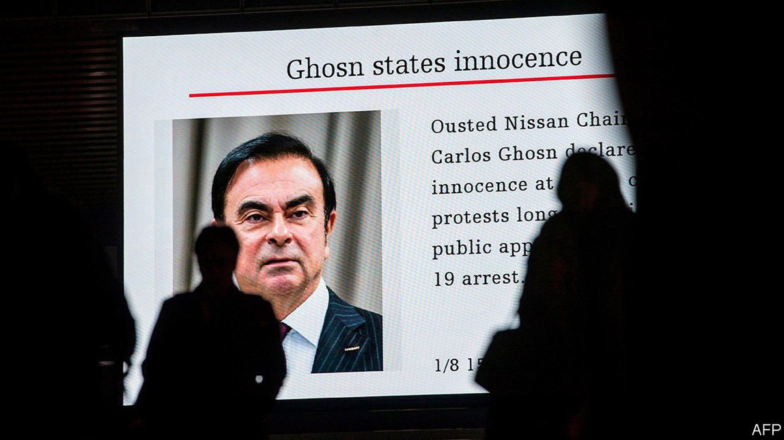

2021-07-02T16:23:47+00:00
汽车故障
卡洛斯·戈恩的大起大落
一本新书解释了他与日产的惊天大决裂【《迎头相撞》书评】
跟卡洛斯·戈恩（Carlos Ghosn）闲不住的劲头比，其他满世界飞的老板都是懒人。他因丑闻倒台，而其中主要事件的起止恰好都发生在公务机上。这场大戏始于一段模糊的电视画面：2018年11月在东京，日本检方登上飞机，逮捕了一脸茫然的戈恩。大约一年后，面对几项金融不当行为指控的他弃保潜逃，这出戏达到了高潮。他被剥夺了一家巨型企业集团的领导权，被用另一架私人飞机偷送出日本，这次是躲在一个箱子里。
由于那次秘密逃亡，汉斯·格雷梅尔（Hans Greimel）和威廉·斯波萨托（William Sposato）这两位驻东京记者的《迎头相撞》（Collision Course）有时读起来就像一部惊悚间谍小说。但他们的主要目标是对戈恩陷入如此困境的深层原因给出迄今为止最清晰的解释。他们做到了。为整个故事——以及戈恩的企业界超级明星地位——奠定基础的是雷诺在1999年对濒临破产的日产出手相救。后来三菱也加入了进来，戈恩将这个联盟打造成为世界最大的汽车制造商。
对日产的纾困条款让雷诺（法国政府持有其大量股份）得到了这家日本公司的控制权，但反过来日产在雷诺的问题上没有发言权。这个联盟倒还没有达到全面合并的地步，在汽车行业里全面合并通常都以灾难告终。这种安排导致日产极度不满，而它已逐渐成为两家公司中更大的那家和主要的利润来源。戈恩凭借自己的强势个性压制住两家汽车制造商之间的紧张关系——两家的工程师很少能就什么事达成一致。
但是，当戈恩在法国政府的授意下寻求让联盟“不可逆转”时，这种紧张关系爆发了。日产将戈恩的意图解读为全面合并的信号，而这会加强法国人的主导地位。戈恩声称这促使日产的一些人为了踢走他而捏造罪名。而日产的说法是戈恩是个贪婪的暴君，把日产当成了个人银行账户。当法国检方也开始调查戈恩时，日产的这个说法变得更加可信了。调查的内容包括为庆祝戈恩妻子的生日而在凡尔赛宫举办的一场奢华派对的资金来源——当时的盛景与戈恩在日本牢房的光景相比是天差地别，在那里，一碗稀饭都算得上奢侈品了。
戈恩可能试图利用延期支付方案来规避薪酬披露，日产称这违反了法律。两位作者指出，戈恩此举背后的原因是企业文化冲突。在日本和法国，首席执行官的工资远低于同等级别的美国老板；他无疑认为自己的本领理应获得符合全球标准的恰当回报。然而，当日本的刑事司法系统（靠长期监禁和高强度的审讯来获得供词）撞上拒不认罪的戈恩，这些对立的说法始终没有在法庭上碰一碰。他最终被保释，但认为自己不会得到公正的审判，还会被软禁多年，于是出逃。
两位作者不愿推测如果当时审讯正常推进的话会做出怎样的裁决，部分读者对此可能会感到失望（作者们得出结论称，鉴于戈恩受到的财务违规指控如此“难懂”，“判决很可能会同样玄奥”）。但最终的结果是戈恩目前仍被困在黎巴嫩，在那里国际逮捕令不能对他做什么，但如果他再登上公务班机的话，逮捕令可能就会执行。与此同时，他创建的联盟在没有领袖的情况下日渐松垮，有分裂的可能。
2021-07-02T16:23:47+00:00
Car trouble
The rise and fall of Carlos Ghosn
A new book explains the spectacular implosion of his relationship with Nissan
THE MAIN events of the scandal that brought down Carlos Ghosn, whose restless energy made other globetrotting bosses look work-shy, are appropriately book-ended by flights on corporate jets. The drama began with grainy television footage of Japanese prosecutors boarding the plane that delivered an unwitting Mr Ghosn to his arrest in Tokyo in November 2018. It culminated in his skipping bail on several charges of financial impropriety around a year later. Stripped of his leadership of a giant conglomerate, he was smuggled out of Japan on another private jet, this time hidden in a box.
Because of that clandestine escape, “Collision Course” by Hans Greimel and William Sposato, two Tokyo-based journalists, at times reads like a spy thriller. But their main aim and achievement is to give the clearest account yet of the deep-rooted causes of Mr Ghosn’s predicament. Underpinning the entire tale—and Mr Ghosn’s status as a corporate superstar—was Renault’s rescue in 1999 of near-bankrupt Nissan, an alliance, later joined by Mitsubishi, which he built into the world’s biggest carmaker.
The terms of Nissan’s bail-out gave Renault, in which the French government has a large shareholding, control of the Japanese firm, but Nissan got no say over Renault in return. The alliance stopped short of a full merger, which, in the car industry, had usually ended in disaster. This arrangement led to seething resentment at Nissan, which gradually became the bigger company and the main source of profits. Mr Ghosn kept a lid on the tensions between the two carmakers—their engineers rarely agreed on anything—through the force of his personality.
But they boiled over as Mr Ghosn sought, at the French government’s behest, to make the alliance “irreversible”. Nissan read this as code for a full merger that would cement Gallic dominance. This, claims Mr Ghosn, led some in Nissan to manufacture charges in order to get rid of him. Nissan’s version is that he was a greedy tyrant who regarded the Japanese firm as a personal bank account. This claim gained more credence when French prosecutors also began an investigation of Mr Ghosn, including into the funding of a lavish party thrown for his wife’s birthday at the palace of Versailles—a far cry from his Japanese prison cell, where a bowl of rice gruel counted as luxury.
The authors point to a clash of corporate cultures as the reason he may have sought to circumvent pay disclosure using a deferred-pay scheme, which Nissan claimed broke the law. In Japan and France CEOs are paid far less than equivalent American bosses; doubtless he thought his skills should be properly rewarded by global standards. The competing narratives were never aired in court, though, after Japan’s criminal-justice system—which relies on prolonged incarceration and intense interrogation to obtain a confession—collided with Mr Ghosn’s stubborn refusal to admit any wrongdoing. Eventually released on bail, he fled in the belief that he would not receive a fair trial and would remain under house arrest for years.
Some readers may be dismayed by the authors’ reluctance to speculate on the verdict should the trial have gone ahead (they conclude that, given the “arcane” accusations of financial irregularities, a “ruling is likely to be just as abstruse”). But the end result is that Mr Ghosn remains trapped, these days in Lebanon, where he is safe from the international arrest warrants that might be executed should he board any more corporate jets. Meanwhile the alliance he created, languishing without its leader, may yet break apart. ■
2021-07-02T16:23:47+00:00
汽車故障
卡洛斯·戈恩的大起大落
一本新書解釋了他與日產的驚天大決裂【《迎頭相撞》書評】
跟卡洛斯·戈恩（Carlos Ghosn）閑不住的勁頭比，其他滿世界飛的老闆都是懶人。他因醜聞倒台，而其中主要事件的起止恰好都發生在公務機上。這場大戲始於一段模糊的電視畫面：2018年11月在東京，日本檢方登上飛機，逮捕了一臉茫然的戈恩。大約一年後，面對幾項金融不當行為指控的他棄保潛逃，這齣戲達到了高潮。他被剝奪了一家巨型企業集團的領導權，被用另一架私人飛機偷送出日本，這次是躲在一個箱子里。
由於那次秘密逃亡，漢斯·格雷梅爾（Hans Greimel）和威廉·斯波薩托（William Sposato）這兩位駐東京記者的《迎頭相撞》（Collision Course）有時讀起來就像一部驚悚間諜小說。但他們的主要目標是對戈恩陷入如此困境的深層原因給出迄今為止最清晰的解釋。他們做到了。為整個故事——以及戈恩的企業界超級明星地位——奠定基礎的是雷諾在1999年對瀕臨破產的日產出手相救。後來三菱也加入了進來，戈恩將這個聯盟打造成為世界最大的汽車製造商。
對日產的紓困條款讓雷諾（法國政府持有其大量股份）得到了這家日本公司的控制權，但反過來日產在雷諾的問題上沒有發言權。這個聯盟倒還沒有達到全面合并的地步，在汽車行業里全面合并通常都以災難告終。這種安排導致日產極度不滿，而它已逐漸成為兩家公司中更大的那家和主要的利潤來源。戈恩憑藉自己的強勢個性壓制住兩家汽車製造商之間的緊張關係——兩家的工程師很少能就什麼事達成一致。
但是，當戈恩在法國政府的授意下尋求讓聯盟“不可逆轉”時，這種緊張關係爆發了。日產將戈恩的意圖解讀為全面合并的信號，而這會加強法國人的主導地位。戈恩聲稱這促使日產的一些人為了踢走他而捏造罪名。而日產的說法是戈恩是個貪婪的暴君，把日產當成了個人銀行賬戶。當法國檢方也開始調查戈恩時，日產的這個說法變得更加可信了。調查的內容包括為慶祝戈恩妻子的生日而在凡爾賽宮舉辦的一場奢華派對的資金來源——當時的盛景與戈恩在日本牢房的光景相比是天差地別，在那裡，一碗稀飯都算得上奢侈品了。
戈恩可能試圖利用延期支付方案來規避薪酬披露，日產稱這違反了法律。兩位作者指出，戈恩此舉背後的原因是企業文化衝突。在日本和法國，首席執行官的工資遠低於同等級別的美國老闆；他無疑認為自己的本領理應獲得符合全球標準的恰當回報。然而，當日本的刑事司法系統（靠長期監禁和高強度的審訊來獲得供詞）撞上拒不認罪的戈恩，這些對立的說法始終沒有在法庭上碰一碰。他最終被保釋，但認為自己不會得到公正的審判，還會被軟禁多年，於是出逃。
兩位作者不願推測如果當時審訊正常推進的話會做出怎樣的裁決，部分讀者對此可能會感到失望（作者們得出結論稱，鑒於戈恩受到的財務違規指控如此“難懂”，“判決很可能會同樣玄奧”）。但最終的結果是戈恩目前仍被困在黎巴嫩，在那裡國際逮捕令不能對他做什麼，但如果他再登上公務班機的話，逮捕令可能就會執行。與此同時，他創建的聯盟在沒有領袖的情況下日漸松垮，有分裂的可能。